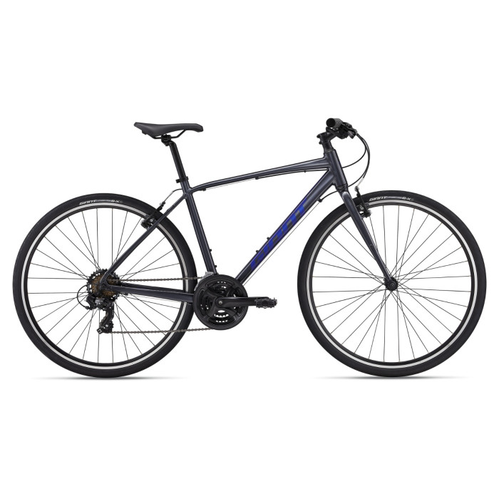
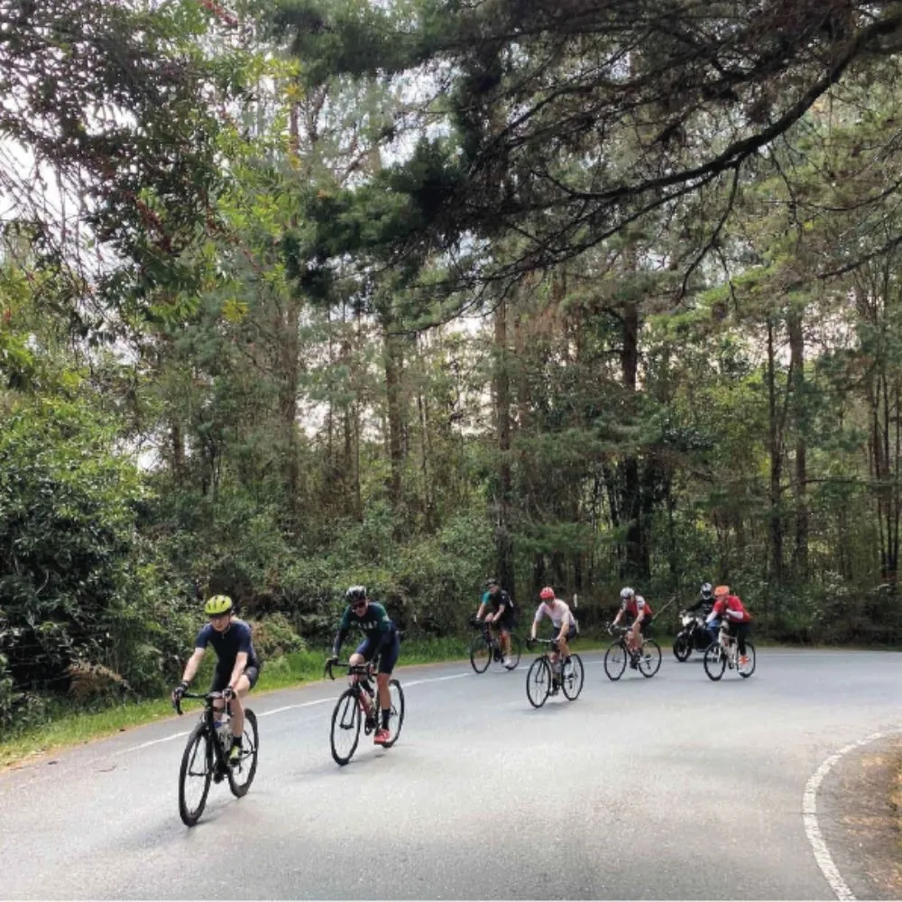
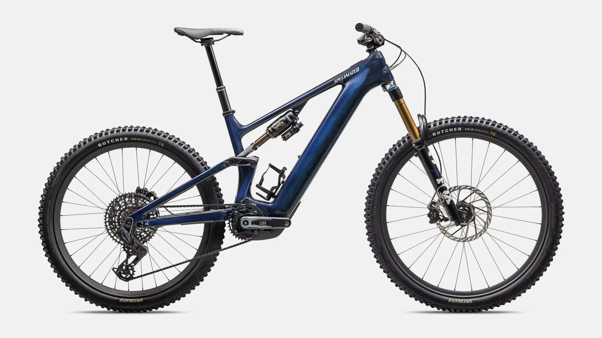
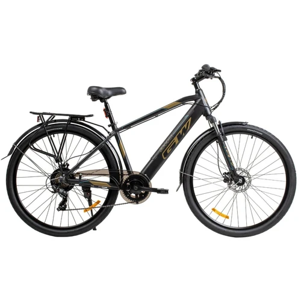
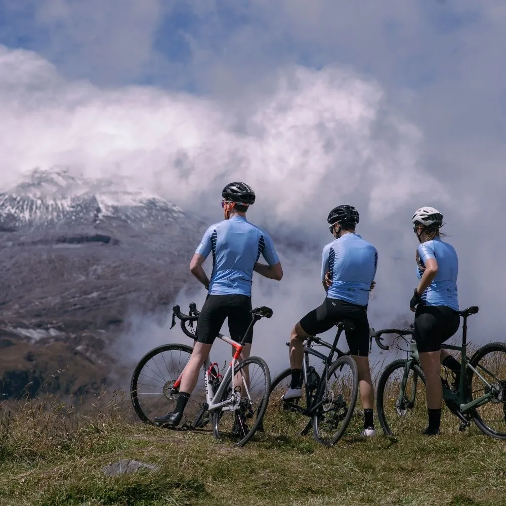

Bicicleta urbana

Ideal para moverte por la ciudad con comodidad. Incluye casco y candado en todos los alquileres, y es muy fácil de manejar, incluso si hace tiempo no montas.
 Saltar al contenido
Saltar al contenido

En Rueda Libre alquilamos bicicletas para que recorras la ciudad y sus alrededores a tu ritmo. Somos un negocio local y nos encanta que cada cliente se sienta como en casa. Si quieres visitarnos, mira la sección Encuéntranos.

Ideal para moverte por la ciudad con comodidad. Incluye casco y candado en todos los alquileres, y es muy fácil de manejar, incluso si hace tiempo no montas.

Pensada para caminos destapados y subidas. Incluye casco, guantes y kit de reparación y tiene suspensión para que el recorrido sea mucho más suave.

Para quienes quieren llegar lejos sin cansarse. Batería con autonomía de hasta 60 km, y puedes cargarla en nuestro local si la necesitas.

Sal con un guía por rutas para todos los niveles, los sábados y domingos a las 7:00 a. m. Mira distancias, duración y precios en la tabla de recorridos guiados.
¿Quieres ver cuánto cuesta alquilar? Consulta nuestras tarifas de alquiler.
Estamos en el centro de Medellín. Mira nuestra ubicación en el mapa (se abre en otra pestaña) o escríbenos a contacto@ruedalibre.com.